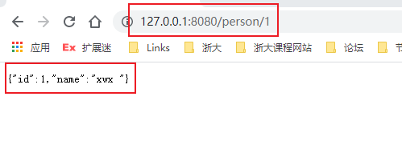

Dropwizard是什么？ 一个用于开发操作友好、高性能、RESTful Web 服务的 Java 框架
Dropwizard 将Java 生态系统中稳定、成熟的库整合到一个 简单、轻量级的包中，让您可以专注于完成工作。
Dropwizard对复杂的配置、 应用程序指标、日志记录、操作工具等提供开箱即用的支持，使您和您的团队能够在尽可能短的时间内提供生产质量的Web 服务。
官网：https://www.dropwizard.io/en/latest/
几个重要的组件 Jetty for HTTP 使用Jetty HTTP 库将一个经过优化的 HTTP 服务器直接嵌入到项目中
Jersey for REST 将 HTTP 请求映射到简单的 Java 对象。
支持流输出、矩阵 URI 参数、条件GET请求等等
Jackson for JSON Metrics for metrics 其他 日志：Logback 和slf4j
Hibernate Validator
等等
HelloWorld 1、使用Maven生成项目 2、基本的依赖 1 2 3 4 5 6 7 8 9 10 11 12 13 14 15 16 17 18 19 20 21 22 23 <properties > <maven.compiler.source > 8</maven.compiler.source > <maven.compiler.target > 8</maven.compiler.target > <project.build.sourceEncoding > UTF-8</project.build.sourceEncoding > <dropwizard.version > 2.0.22</dropwizard.version > <mysql-connector.version > 8.0.16</mysql-connector.version > </properties > <dependencies > <dependency > <groupId > io.dropwizard</groupId > <artifactId > dropwizard-core</artifactId > <version > ${dropwizard.version}</version > </dependency > <dependency > <groupId > mysql</groupId > <artifactId > mysql-connector-java</artifactId > <version > ${mysql-connector.version}</version > </dependency > </dependencies >
3、创建配置类 每个 Dropwizard 应用程序都有自己的Configuration类，用于指定特定于环境的参数。这些参数在YAML配置文件中指定，该文件会被加载，然后被反序列化为应用程序配置类的实例
1 2 3 4 5 6 7 8 9 10 11 12 13 14 15 16 17 18 19 20 21 22 23 24 25 26 27 28 public class HelloConfiguration extends Configuration @NotEmpty private String template; @NotEmpty private String defaultName = "Stranger" ; @JsonProperty public String getTemplate () return template; } @JsonProperty public void setTemplate (String template) this .template = template; } @JsonProperty public String getDefaultName () return defaultName; } @JsonProperty public void setDefaultName (String name) this .defaultName = name; } }
这个类会从 YAML 文件中反序列化，会去找两个跟级字段：template以及defaultName
1 2 template: Hello, %s! defaultName: Stranger
这个文件要放在项目根目录下面
4、创建一个Application类 必须要重写 run 方法（这个方法是抽象方法）
1 2 3 4 5 6 7 8 9 10 11 12 13 14 15 16 17 18 19 20 21 public class HelloWorldApplication extends Application <HelloConfiguration > public static void main (String[] args) throws Exception new HelloWorldApplication().run(args); } @Override public String getName () return "Hello World" ; } @Override public void initialize (Bootstrap<HelloConfiguration> bootstrap) } @Override public void run (HelloConfiguration helloConfiguration, Environment environment) throws Exception } }
5、创建DAO类（pojo) 1 2 3 4 5 6 7 8 9 10 11 12 13 14 15 16 17 18 19 20 21 22 public class Saying private long id; private String content; public Saying () } public Saying (long id, String content) this .id = id; this .content = content; } @JsonProperty public long getId () return id; } @JsonProperty public String getContent () return content; } }
6、创建Resource类 1 2 3 4 5 6 7 8 9 10 11 12 13 14 15 16 17 18 19 20 @Path("/get") @Produces(MediaType.APPLICATION_JSON) public class HelloResource private final String tempalte; private final String defaultName; private final AtomicLong counter; public HelloResource (String tempalte, String defaultName) this .tempalte = tempalte; this .defaultName = defaultName; this .counter = new AtomicLong(); } @GET public Saying sayHello (@QueryParam("name") Optional<String> name) String value = String.format(tempalte, name.orElse(defaultName)); return new Saying(counter.incrementAndGet(), value); } }
7、注册Resource类使其生效 在Application类中注册
1 2 3 4 5 6 7 8 @Override public void run (HelloConfiguration configuration, Environment env) throws Exception HelloResource helloResource = new HelloResource(configuration.getTemplate(), configuration.getDefaultName()); env.jersey().register(helloResource); }
8、启动 命令行启动：
命令行启动的话需要把配置文件放在子工程 的根目录
1 2 java -jar target/01-HelloWorld-1.0-SNAPSHOT.jar server hello.yml
IDEA启动：
需要把配置文件放在父工程 的根目录
也可以在命令中指定配置文件路径
9、测试
Dropwizard Core 提供了什么？
Jetty，一个高性能的 HTTP 服务器。
Jersey，一个功能齐全的 RESTful Web 框架。
Jackson，JVM 的最佳 JSON 库。
Metrics，一个优秀的应用程序度量库。
Logback，Log4j 的继承者，Java 使用最广泛的日志框架。
Hibernate Validator，Java Bean 验证标准的参考实现。
官方建议把项目分成三个模块：project-api，project-client，和 project-application。
api：简单的Java bean
client：处理HTTP请求
application：应用类
日志功能 Dropwizard 使用Logback 作为其日志记录后端。它提供了一个slf4j 实现
slf4j 提供以下日志级别：
ERROR：可能仍允许应用程序继续运行的错误事件。WARN：可能有害的情况。INFO：在粗粒度级别突出显示应用程序进度的信息性消息。DEBUG：对调试应用程序最有用的细粒度信息事件。TRACE：比DEBUG级别更细粒度的信息事件。
如果不想使用可以排除，具体参考：https://www.dropwizard.io/en/latest/manual/core.html
日志保存到文件
1 2 3 4 5 6 7 8 9 10 11 12 13 14 15 16 17 logging: appenders: - type: file currentLogFilename: ./logs/example.log archivedLogFilenamePattern: ./logs/example-%d.log.gz archivedFileCount: 5 timeZone: UTC
Jersey 一个框架，用于将传入 HTTP 请求的各个方面映射到 POJO，然后将 POJO 的各个方面映射到传出 HTTP 响应。
Servlet 过滤器 1 2 3 4 5 6 7 8 9 10 11 12 13 14 15 16 17 18 public class DateNotSpecifiedServletFilter implements javax .servlet .Filter @Override public void doFilter (ServletRequest request, ServletResponse response, FilterChain chain) throws IOException, ServletException if (request instanceof HttpServletRequest) { String dateHeader = ((HttpServletRequest) request).getHeader(HttpHeaders.DATE); if (dateHeader != null ) { chain.doFilter(request, response); } else { HttpServletResponse httpResponse = (HttpServletResponse) response; httpResponse.setStatus(HttpStatus.BAD_REQUEST_400); httpResponse.getWriter().print("Date Header was not specified" ); } } } }
将这个 servlet 过滤器包装在自己的 Application 类中FilterHolder并将其添加到应用程序上下文中，并与此过滤器将激活哪些路径的规范一起注册到您的 Application 类中。下面是一个例子：
1 2 3 environment.servlets() .addFilter("DateNotSpecifiedServletFilter" , new DateNotSpecifiedServletFilter()).addMappingForUrlPatterns(EnumSet.of(DispatcherType.REQUEST), true , "/*" );
其他
Dropwizard 的所有 API 的设计都考虑到了可测试性，即使应用程序也可以进行单元测试
可以自定义 banner，放在src/main/resources目录下即可
每个资源类都必须有一个@Path注解
@Timed 测量对资源请求的持续时间（不能和 @Metered 同时使用@Metered 衡量资源被访问的速率@ResponseMetered 测量每类响应代码的速率（1xx/2xx/3xx/4xx/5xx）@ExceptionMetered 测量处理资源的异常发生的频率JSON 的一个常见问题是camelCase和snake_case字段名称之间的分歧。Java 和 Javascript 的人往往喜欢camelCase；Ruby、Python 和 Perl 的人坚持使用 snake_case. 要使 Dropwizard 自动将字段名称转换为snake_case（并返回），只需在类上面加注解@JsonSnakeCase
返回大量信息，使用流式输出可能会大大提高性能和效率。通过返回一个实现 JerseyStreamingOutput 接口的对象，您的方法可以在块编码的输出流中流式传输响应实体
依赖注入 依赖注入机制的底层库是 Eclipse 的HK2 ，推荐 Spring
JDBI JDBI是Java的SQL连接处理的便利工具库。它试图以Java中使用集合，bean等来映射关系来访问关系数据库，同时保持与JDBC相同的粒度
要创建托管的 检测Jdbi实例， 配置类 需要一个DataSourceFactory实例：
1 2 3 4 5 6 7 8 9 10 11 12 13 14 15 public class ExampleConfiguration extends Configuration @Valid @NotNull private DataSourceFactory database = new DataSourceFactory(); @JsonProperty("database") public void setDataSourceFactory (DataSourceFactory factory) this .database = factory; } @JsonProperty("database") public DataSourceFactory getDataSourceFactory () return database; } }
然后，在Application类的run方法中，创建一个新的JdbiFactory：
1 2 3 4 5 6 @Override public void run (ExampleConfiguration config, Environment environment) final JdbiFactory factory = new JdbiFactory(); final Jdbi jdbi = factory.build(environment, config.getDataSourceFactory(), "postgresql" ); environment.jersey().register(new UserResource(jdbi)); }
这将创建一个到数据库的新托管 连接池、一个用于连接到数据库的 运行状况检查 以及一个Jdbi 供您使用的新实例。
配置文件：
1 2 3 4 5 6 7 8 9 10 11 12 13 14 15 16 17 18 19 20 21 22 23 24 25 26 27 28 29 30 31 32 33 34 35 36 37 38 39 40 database: driverClass: org.postgresql.Driver user: pg-user password: iAMs00perSecrEET url: jdbc:postgresql://db.example.com/db-prod properties: charSet: UTF-8 maxWaitForConnection: 1s validationQuery: "/* MyService Health Check */ SELECT 1" validationQueryTimeout: 3s minSize: 8 maxSize: 32 checkConnectionWhileIdle: false evictionInterval: 10s minIdleTime: 1 minute
建议使用 JDBI 的SQL Objects API ，它允许将 DAO 类编写为接口：
1 2 3 4 5 6 7 8 9 10 11 12 public interface MyDAO @SqlUpdate("create table something (id int primary key, name varchar(100))") void createSomethingTable () @SqlUpdate("insert into something (id, name) values (:id, :name)") void insert (@Bind("id") int id, @Bind("name") String name) @SqlQuery("select name from something where id = :id") String findNameById (@Bind("id") int id) ; } final MyDAO dao = database.onDemand(MyDAO.class);
Dropwizard Hibernate 1、需要一个DataSourceFactory 实例 1 2 3 4 5 6 7 8 9 10 11 12 13 14 15 16 17 18 public class HibernateConfiguration extends Configuration @Valid @NotNull private DataSourceFactory database = new DataSourceFactory(); @JsonProperty("database") public DataSourceFactory getDataSourceFactory () return database; } @JsonProperty("database") public void setDataSourceFactory (DataSourceFactory dataSourceFactory) this .database = dataSourceFactory; } }
2、在应用类中注册这个实例 1 2 3 4 5 6 7 8 9 10 11 12 13 14 15 16 17 18 19 20 21 22 23 24 25 26 27 public class HibernateApplication extends Application <HibernateConfiguration > public static void main (String[] args) throws Exception new HibernateApplication().run(args); } private final HibernateBundle<HibernateConfiguration> hibernate = new HibernateBundle<HibernateConfiguration>(Person.class) { @Override public DataSourceFactory getDataSourceFactory (HibernateConfiguration configuration) return configuration.getDataSourceFactory(); } }; @Override public void initialize (Bootstrap<HibernateConfiguration> bootstrap) bootstrap.addBundle(hibernate); } @Override public void run (HibernateConfiguration hibernateConfiguration, Environment environment) throws Exception final PersonDAO dao = new PersonDAO(hibernate.getSessionFactory()); environment.jersey().register(new PersonResource(dao)); } }
实体类如下
1 2 3 4 5 6 7 8 9 10 11 12 13 14 15 16 17 18 19 20 21 22 23 24 25 26 27 28 29 30 31 32 33 @Entity @Table(name = "person") @NamedQueries({ @NamedQuery(name = "dao.Person.findAll", query = "select p from Person p"), @NamedQuery(name = "dao.Person.findById", query = "select p from Person p where p.id = ?1") }) public class Person @Id @GeneratedValue(strategy = GenerationType.IDENTITY) private Long id; private String name; public Person () } public Long getId () return id; } public void setId (Long id) this .id = id; } public String getName () return name; } public void setName (String name) this .name = name; } }
实体类对应的 DAO类
1 2 3 4 5 6 7 8 9 10 11 12 13 14 15 16 17 18 19 20 21 public class PersonDAO extends AbstractDAO <Person > public PersonDAO (SessionFactory factory) super (factory); } public Person findById (long id) return get(id); } public Long create (Person person) return persist(person).getId(); } public List<Person> findAll () return list((CriteriaQuery<Person>) namedQuery("dao.Person.findAll" )); } }
AbstractDAO：一个用于特定于实体的 DAO 类的最小模板。它包含用于SessionFactory的常见操作的类型安全包装器
配置文件
1 2 3 4 5 6 7 8 9 10 11 12 13 14 15 16 17 18 19 database: driverClass: com.mysql.cj.jdbc.Driver user: root password: 123456 url: jdbc:mysql://127.0.0.1:3306/dropwizard?serverTimezone=CST properties: hibernate.dialect: org.hibernate.dialect.MySQL5Dialect hibernate.hbm2ddl.auto: update hibernate.format_sql: true hibernate.show_sql: true logging: level: INFO
3、使用 实现 resource 类，在应用类中配置 resource 类（上面配置过了），然后启动服务，打开浏览器在浏览器中请求（先启动应用，会自动生成表，然后插一条数据再请求）
1 2 3 4 5 6 7 8 9 10 11 12 13 14 15 16 17 18 @Path(value = "/person") @Produces(MediaType.APPLICATION_JSON) public class PersonResource private PersonDAO dao; public PersonResource (PersonDAO dao) this .dao = dao; } @GET @Path("/{id}") @Timed @UnitOfWork public Person findPerson (@PathParam("id") LongParam id) return dao.findById(id.get()); } }

流程图